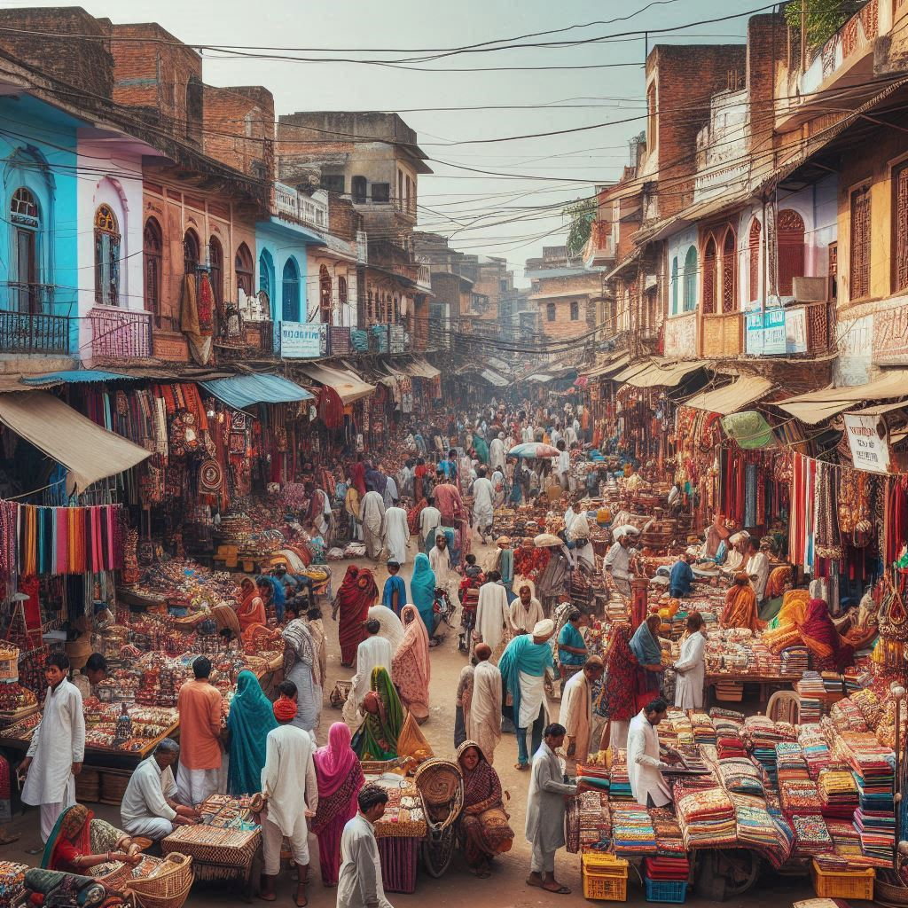

Bihar's Cultural Heritage
Festivals:
- Chhath Puja: This is one of the most significant festivals in Bihar, dedicated to the Sun God (Surya) and Chhathi Maiya. People observe fasts, offer prayers, and make offerings to the Sun, especially during the sunrise and sunset.
- Bihar Divas: Celebrated on March 22nd, this day marks the formation of the state of Bihar. It is celebrated with various cultural events, exhibitions, and folk performances.
- Makar Sankranti: This harvest festival is celebrated with kite flying and feasting on traditional dishes made from sesame and jaggery.
- Holi and Diwali: Like many other parts of India, Holi (the festival of colors) and Diwali (the festival of lights) are widely celebrated in Bihar, featuring vibrant festivities, traditional sweets, and community gatherings.
Music and Dance:
- Bihar's Folk Music: The state is known for its folk songs, which often narrate stories of love, nature, and everyday life. "Bidesia" is a popular genre of folk music that reflects the struggles and aspirations of the people.
- Dance Forms: Traditional dances like "Jat-Jatin," "Bihar Ka Gharwa," and "Litti-Chokha Dance" are integral to cultural celebrations. These dances are characterized by rhythmic movements and are usually performed during festivals and community gatherings.


Cuisine:
- Litti Chokha: This is a traditional Bihari dish consisting of round wheat balls (litti) stuffed with roasted gram flour and spices, served with chokha (a mashed mix of eggplant, tomato, and potatoes).
- Sweets: Bihar is famous for its sweets like Kheer (rice pudding), Thekua (a sweet made of wheat flour and jaggery), and Makhania Lassi (a creamy yogurt drink).
- Seasonal Dishes: Many festivals feature specific foods, such as pithas (rice cakes) during Makar Sankranti and khichdi on Makar Sankranti and other auspicious occasions.
Art and Craft:
- Madhubani Painting: This traditional art form from the Mithila region of Bihar is known for its intricate patterns and vibrant colors. Madhubani paintings often depict mythological themes, nature, and social rituals.
- Sikki Grass Craft: Artisans in Bihar create beautiful handicrafts from sikki grass, which include baskets, mats, and decorative items. This craft has been passed down through generations.
- Woodwork and Pottery: Bihar is also known for its wooden crafts and terracotta pottery, often used in household items and decorative pieces.
Language and Literature:
- Hindi: The official language and widely spoken by the majority.
- Bhojpuri: A prominent regional language, especially in the western parts of Bihar.
- Maithili: Spoken in the Mithila region, Maithili is recognized as a separate language and has a rich literary heritage.
- Magahi: Spoken in the Magadh region, it is another regional dialect with a long history.
Religion and Spirituality:
- Buddhism: The state is home to Bodh Gaya, where Gautama Buddha attained enlightenment under the Bodhi tree. It attracts thousands of pilgrims from around the world.
- Jainism: Vaishali, located in Bihar, is considered an important site in Jain history, being the birthplace of Lord Mahavira, the 24th Tirthankara.
- Hinduism: The state is dotted with numerous temples and religious sites, including Nalanda (an ancient center of learning) and Rajgir (associated with many Hindu and Buddhist traditions).
Education and Scholarship:
- Bihar has a long history of educational institutions and scholarship. The ancient Nalanda University was one of the first residential universities in the world, attracting students from across Asia. In modern times, Bihar is home to several universities and colleges, contributing to education in various fields.
Conclusion:
The culture of Bihar is a tapestry of rich traditions, festivals, art forms, and cuisines, reflecting
the state's historical significance and diverse communities. From its vibrant folk music and dance to
its culinary delights and historical sites, Bihar offers a unique cultural experience that continues to
thrive in contemporary India.